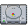
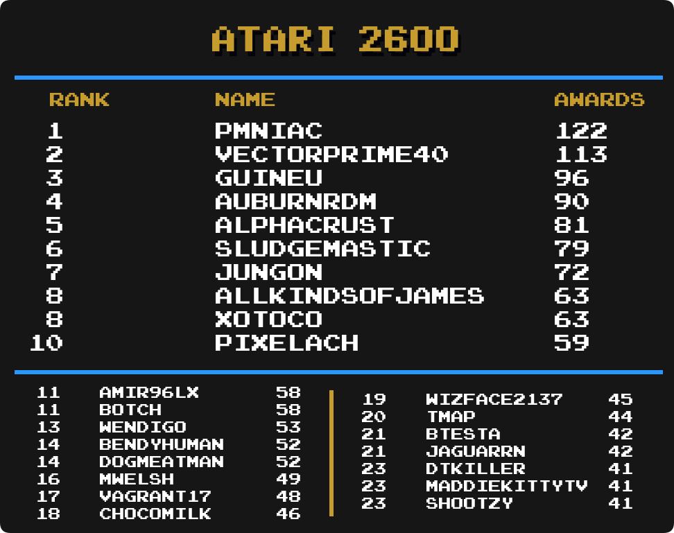

Top Masteries
 By
MrOwnership
By
MrOwnership
Contents
- Intro
- Current Champions
- Notable Milestones
-
Category Rankings
- Total Awards
- Total Awards (Excluding Hacks)
- Event Awards
- Site Awards
- Hack Awards
- Homebrew Awards
- Subset Awards
- Amstrad CPC
- Apple II
- Arcade
- Arcadia 2001
- Arduboy
- Atari 2600
- Atari Jaguar CD
- Dreamcast
- Elektor TV Games Computer
- Fairchild Channel F
- Game Boy
- Game Boy Advance
- Game Boy Color
- Game Gear
- Interton VC 4000
- Master System
- Mega Drive
- Mega Duck
- Nintendo 64
- NES
- Nintendo DS
- Nintendo DSi
- PC Engine
- PC Engine CD
- PC-8000/8800
- PlayStation
- PlayStation 2
- PlayStation Portable
- Pokémon Mini
- Sega Saturn
- Sega CD
- SG-1000
- SNES
- Uzebox
- Virtual Boy
- WASM-4
- Watara Supervision
Intro
We are going to take a look at another metric for greatness, Mastery Awards. Mastery awards are given to users when they complete every achievement for a given set in hardcore mode. Users wear mastery awards as a badge of honor on their profile page representing all the hard work they put into truly becoming a master of the game.
Below we will take a look at which users rank among the best with the most mastery awards in several categories well as notable updates from the previous month to each individual category. Check to see how you rank among the rest of the community members.
Special thanks to  Nydaxn for creating the ranking image templates.
Nydaxn for creating the ranking image templates.
* Data as of December 1st 2023.
Current Champions
|
|
|
Mastery Awards | |
|---|---|---|---|
 Total Awards
|  Infernum Infernum | 1277 | |
| Event Awards
|  freezestar freezestar | 27 | |
| Site Awards
|  televandalist televandalist | 28 | |
| Hacks
|  HolyShinx HolyShinx | 268 | |
| Homebrews
|  AuburnRDM AuburnRDM | 234 | |
| Subsets
|  Blazekickn Blazekickn | 26 | |
 3DO Interactive Multiplayer
|
 guineu guineu midgetstrawdog midgetstrawdog Vyach59 Vyach59
|
12 | |
 Amstrad CPC
|  roukanumachi roukanumachi | 15 | |
 Apple II
|  Sylrifaide Sylrifaide | 20 | |
 Arcade
|  LordBBH LordBBH | 78 | |
 Arcadia 2001
|  sludgemastic sludgemastic | 20 | |
 Arduboy
| Infernum | 47 | |
 Atari 2600
|  PMniac PMniac | 122 | |
 Atari 7800
| PMniac | 20 | |
 Atari Jaguar
| PMniac | 11 | |
 Atari Jaguar CD
| sludgemastic | 8 | |
 Atari Lynx
|
guineu Jungon Jungon
| 8 | |
 ColecoVision
| PMniac | 23 | |
 Dreamcast
|  ChrisGold97 ChrisGold97 | 20 | |
 Elektor TV Games Computer
| sludgemastic | 22 | |
 Fairchild Channel F
|  Maximdraco Maximdraco | 31 | |
 Game Boy
|  Shootzy Shootzy | 150 | |
 Game Boy Advance
|  bonecrusher1022 bonecrusher1022 | 168 | |
 Game Boy Color
|  valeforge valeforge | 120 | |
 Game Gear
| Nydaxn | 86 | |
 Intellivision
| Jungon | 22 | |
 Interton VC 4000
|  DrunkeSuperman DrunkeSuperman | 24 | |
 Magnavox Odyssey 2
| Maximdraco | 18 | |
Master System
| Jungon | 102 | |
 Mega Drive
|  DUT DUT | 136 | |
 Mega Duck
|  AzuchiAkeshi AzuchiAkeshi | 12 | |
 MSX
| guineu | 14 | |
 Nintendo 64
|  ChronoGear ChronoGear | 40 | |
 Neo Geo CD
|
 missiray missiray Odincito89 Odincito89 Prota Prota Tyiiop Tyiiop
|
2 | |
 Neo Geo Pocket
|  MelodyAsh MelodyAsh | 16 | |
 NES
|  SanMarino SanMarino | 246 | |
 Nintendo DS
|  Olafur Olafur | 112 | |
 Nintendo DSi
|  MiningMario MiningMario | 31 | |
 PC Engine
| Infernum | 37 | |
 PC Engine CD
|
 Annonith Infernum Annonith Infernum
| 10 | |
 PC-8000/8800
|  Orph Orph | 15 | |
 PC-FX
|  Nanashi Nanashi | 9 | |
 PlayStation
|  FBiDev FBiDev | 116 | |
 PlayStation 2
| Infernum | 66 | |
 PlayStation Portable
|  Waishler Waishler | 55 | |
 Pokémon Mini
| Sylrifaide | 36 | |
 Sega 32X
|
 Farofa Jungon Farofa Jungon Nevanos Nevanos
|
5 | |
 Sega Saturn
| Orph | 16 | |
 Sega CD
|  Drakub Drakub | 19 | |
 SG-1000
| Jungon | 45 | |
 SNES
|  danibodom danibodom | 228 | |
 Uzebox
|  Dominick Dominick | 20 | |
 Vectrex
| Jungon | 14 | |
 Virtual Boy
|
Jungon Grahamtams Grahamtams
| 18 | |
 WASM-4
|  Amir96lx Amir96lx | 52 | |
 Watara Supervision
| AzuchiAkeshi | 52 | |
 WonderSwan
|  GregHouse007 GregHouse007 | 8 |
Notable Milestones
400 Mastery Awards
 YahwehTzVaoth YahwehTzVaoth |
 Timmay Timmay |
 SuperMeatBro SuperMeatBro |
| sludgemastic |
 metalbubble403 metalbubble403 |
 BlotchJBMR BlotchJBMR |
300 Mastery Awards
| Orph |
 earfly earfly |
 Botch Botch |
200 Mastery Awards
 TheGuineapigWizard TheGuineapigWizard |
 IzaNamiZX IzaNamiZX |
 ILLSeaBass ILLSeaBass |
 bennz13 bennz13 |
 14ausher 14ausher |
100 Mastery Awards
 Zaykros
Zaykros woifi
woifi VinnyBill
VinnyBill TripleDeek
TripleDeek Thomas0644
Thomas0644 Tehachapi
Tehachapi PS2wizard
PS2wizard PARKOUR62
PARKOUR62 Metavy
Metavy hirumaspace
hirumaspace HardSonicStorm
HardSonicStorm genesislover
genesislover GamerGal1992
GamerGal1992 Fretzi
Fretzi dillard
dillard Deikorim
Deikorim DaniWoX
DaniWoX chrisjmuller1980
chrisjmuller1980 bcrew1375
bcrew1375 Akai
Akai AceMoon1974
AceMoon1974 25829
25829Category Rankings
Total Awards

-
Infernum remains in 1st with 1277 total mastery awards.
-
Amir96lx has moved up 1 spot and is in 6th place.
-
 NEOMAR has moved up 1 spot and is in 10th place.
NEOMAR has moved up 1 spot and is in 10th place. -
 MaddieKittyTV has moved up 1 spot and is in 17th place.
MaddieKittyTV has moved up 1 spot and is in 17th place. -
 Whoops has moved up 2 spots and is in 20th place.
Whoops has moved up 2 spots and is in 20th place.
Total Awards (Excluding Hacks)
-
Infernum remains in 1st with 1208 total mastery awards.
-
Amir96lx has moved up 1 spot and is in 3rd place.
-
 Bendyhuman has moved up 1 spot and is in 5th place.
Bendyhuman has moved up 1 spot and is in 5th place. -
Jungon has moved up 1 spot and is in 7th place.
-
Whoops has moved up 2 spots and is in 18th place.
-
Olafur has moved up 1 spot and is in 23rd place.
Event Awards
-
freezestar remains in 1st with 27 total mastery awards.
-
 Sef has moved up 1 spot and is tied for 7th place.
Sef has moved up 1 spot and is tied for 7th place. -
 Tayadaoc has moved up 1 spot and is tied for 7th place.
Tayadaoc has moved up 1 spot and is tied for 7th place. -
 Lonoke31 has moved up 2 spots and is in 11th place.
Lonoke31 has moved up 2 spots and is in 11th place. -
 Sutarion has moved up 10 spots and is tied for 14th place.
Sutarion has moved up 10 spots and is tied for 14th place. -
Amir96lx has made it into the top 25 and is in a 7-way tie for 16th place.
-
NEOMAR has moved up 2 spots and is in a 7-way tie for 16th place.
-
 StingX2 has moved up 3 spots and is in a 7-way tie for 16th place.
StingX2 has moved up 3 spots and is in a 7-way tie for 16th place. -
 amine456 has made it into the top 25 and is in a 7-way tie for 23rd place.
amine456 has made it into the top 25 and is in a 7-way tie for 23rd place. -
 Doggy227 has made it into the top 25 and is in a 7-way tie for 23rd place.
Doggy227 has made it into the top 25 and is in a 7-way tie for 23rd place.
Site Awards
-
televandalist remains in 1st with 28 total mastery awards.
-
 Excessiveiser has moved up 1 spot and is tied for 12th place.
Excessiveiser has moved up 1 spot and is tied for 12th place. -
 Brandovsky has moved up 1 spot and is in a 3-way tie for 14th place.
Brandovsky has moved up 1 spot and is in a 3-way tie for 14th place. -
 kmpers has moved up 3 spots and is in a 3-way tie for 14th place.
kmpers has moved up 3 spots and is in a 3-way tie for 14th place. -
 Jamiras has made it into the top 25 and is in a 5-way tie for 20th place.
Jamiras has made it into the top 25 and is in a 5-way tie for 20th place. -
 ThatAmericanSlacker has made it into the top 25 and is in a 5-way tie for 20th place.
ThatAmericanSlacker has made it into the top 25 and is in a 5-way tie for 20th place.
Hack Awards

-
HolyShinx remains in 1st with 268 total mastery awards.
-
 stfN1337 has moved up 1 spot and is in 11th place.
stfN1337 has moved up 1 spot and is in 11th place. -
 Jacobgharibian has moved up 1 spot and is in 14th place.
Jacobgharibian has moved up 1 spot and is in 14th place. -
 MaxMilyin has moved up 1 spot and is in 16th place.
MaxMilyin has moved up 1 spot and is in 16th place.
Homebrew Awards

-
AuburnRDM remains in 1st with 234 total mastery awards.
-
Amir96lx has moved up 1 spot and is tied for 4th place.
-
Jungon has moved up 1 spot and is in 10th place.
-
 MarioKness has moved up 7 spots and is in 17th place.
MarioKness has moved up 7 spots and is in 17th place. -
Sutarion has moved up 1 spot and is in 20th place.
-
 ChocoMilk has made it into the top 25 and is tied for 22nd place.
ChocoMilk has made it into the top 25 and is tied for 22nd place.
Subset Awards

-
Blazekickn remains in 1st with 26 total mastery awards.
-
 GreninjaMan has moved up 1 spot and is in 2nd place.
GreninjaMan has moved up 1 spot and is in 2nd place. -
 WKGames has moved up 2 spots and is in 4th place.
WKGames has moved up 2 spots and is in 4th place. -
 WanderingHeiho has moved up 1 spot and is in a 3-way tie for 5th place.
WanderingHeiho has moved up 1 spot and is in a 3-way tie for 5th place. -
 xenoriddley has made it into the top 25 and is in a 3-way tie for 13th place.
xenoriddley has made it into the top 25 and is in a 3-way tie for 13th place. -
 Adenothe has moved up 7 spots and is in a 13-way tie for 16th place.
Adenothe has moved up 7 spots and is in a 13-way tie for 16th place. -
 benit149 has made it into the top 25 and is in a 13-way tie for 16th place.
benit149 has made it into the top 25 and is in a 13-way tie for 16th place. -
 Kinghippo44 has made it into the top 25 and is in a 13-way tie for 16th place.
Kinghippo44 has made it into the top 25 and is in a 13-way tie for 16th place.
Amstrad CPC

-
roukanumachi remains in 1st with 15 total mastery awards.
-
 alundra82 has moved up 1 spot and is tied for 2nd place.
alundra82 has moved up 1 spot and is tied for 2nd place. -
 Mosk59 has moved up 2 spots and is in a 3-way tie for 7th place.
Mosk59 has moved up 2 spots and is in a 3-way tie for 7th place. -
 mudrik has made it into the top 25 and is in a 5-way tie for 17th place.
mudrik has made it into the top 25 and is in a 5-way tie for 17th place. -
 NeuroVoid has made it into the top 25 and is in a 5-way tie for 17th place.
NeuroVoid has made it into the top 25 and is in a 5-way tie for 17th place.
Apple II
-
Sylrifaide remains in 1st with 20 total mastery awards.
-
NEOMAR has moved up 9 spots and is tied for 5th place.
-
 alphacrust has moved up 1 spot and is in a 5-way tie for 7th place.
alphacrust has moved up 1 spot and is in a 5-way tie for 7th place. -
Bendyhuman has moved up 1 spot and is in a 5-way tie for 7th place.
-
Infernum has moved up 2 spots and is in a 5-way tie for 7th place.
-
Whoops has moved up 1 spot and is in a 5-way tie for 7th place.
-
Amir96lx has moved up 13 spots and is in a 5-way tie for 12th place.
-
Timmay has made it into the top 25 and is in 17th place.
-
 Avirumque has made it into the top 25 and is in a 4-way tie for 18th place.
Avirumque has made it into the top 25 and is in a 4-way tie for 18th place. -
mudrik has made it into the top 25 and is in a 4-way tie for 18th place.
-
 TheLooseGroose has made it into the top 25 and is in a 4-way tie for 18th place.
TheLooseGroose has made it into the top 25 and is in a 4-way tie for 18th place. -
 4lexGrey has made it into the top 25 and is in a 12-way tie for 22nd place.
4lexGrey has made it into the top 25 and is in a 12-way tie for 22nd place. -
 Advent has made it into the top 25 and is in a 12-way tie for 22nd place.
Advent has made it into the top 25 and is in a 12-way tie for 22nd place.
Arcade
-
LordBBH remains in 1st with 78 total mastery awards.
-
 dorayaki has moved up 3 spots and is tied for 17th place.
dorayaki has moved up 3 spots and is tied for 17th place. -
 AliasMcDoe has made it into the top 25 and is in a 3-way tie for 20th place.
AliasMcDoe has made it into the top 25 and is in a 3-way tie for 20th place.
Arcadia 2001

-
sludgemastic remains in 1st with 20 total mastery awards.
-
 DrunkenSuperman has made it into the top 25 and is in 2nd place.
DrunkenSuperman has made it into the top 25 and is in 2nd place. -
Maximdraco has made it into the top 25 and is tied for 4th place.
-
Whoops has made it into the top 25 and is in a 5-way tie for 13th place.
-
14ausher has made it into the top 25 and is in a 33-way tie for 18th place.
-
 Bums79 has made it into the top 25 and is in a 33-way tie for 18th place.
Bums79 has made it into the top 25 and is in a 33-way tie for 18th place.
Arduboy

-
Infernum has taken 1st place with 47 total mastery awards.
-
AuburnRDM has moved up 1 spot and is in a 3-way tie for 13th place.
-
MiningMario has moved up 2 spots and is in a 3-way tie for 13th place.
-
 Bryan1150 has moved up 5 spots and is in a 3-way tie for 19th place.
Bryan1150 has moved up 5 spots and is in a 3-way tie for 19th place. -
Whoops has made it into the top 25 and is tied for 22nd place.
Atari 2600

-
PMniac remains in 1st with 122 total mastery awards.
-
 Wendigo has moved up 1 spot and is in 13th place.
Wendigo has moved up 1 spot and is in 13th place. -
Bendyhuman has moved up 1 spot and is tied for 14th place.
-
 jaguarrn has made it into the top 25 and is tied for 21st place.
jaguarrn has made it into the top 25 and is tied for 21st place. -
 dtkiller has moved up 2 spots and is in a 3-way tie for 23rd place.
dtkiller has moved up 2 spots and is in a 3-way tie for 23rd place.
Atari Jaguar CD

-
sludgemastic remains in 1st with 8 total mastery awards.
-
14ausher has made it into the top 25 and is in a 19-way tie for 15th place.
-
 acidburnn has made it into the top 25 and is in a 19-way tie for 15th place.
acidburnn has made it into the top 25 and is in a 19-way tie for 15th place. -
Jungon has made it into the top 25 and is in a 19-way tie for 15th place.
-
 Piccolo has made it into the top 25 and is in a 19-way tie for 15th place.
Piccolo has made it into the top 25 and is in a 19-way tie for 15th place.
Dreamcast
-
ChrisGold97 has taken 1st place with 20 total mastery awards.
-
 rev has moved up 1 spot and is tied for 3rd place.
rev has moved up 1 spot and is tied for 3rd place. -
 Andrey199650 has moved up 1 spot and is in a 3-way tie for 6th place.
Andrey199650 has moved up 1 spot and is in a 3-way tie for 6th place. -
 DaleRedfield has moved up 6 spots and is in a 3-way tie for 6th place.
DaleRedfield has moved up 6 spots and is in a 3-way tie for 6th place. -
Infernum has moved up 7 spots and is in a 5-way tie for 9th place.
-
 Kiko has made it into the top 25 and is in a 11-way tie for 17th place.
Kiko has made it into the top 25 and is in a 11-way tie for 17th place. -
 Scout has made it into the top 25 and is in a 11-way tie for 17th place.
Scout has made it into the top 25 and is in a 11-way tie for 17th place. -
 Signum has made it into the top 25 and is in a 11-way tie for 17th place.
Signum has made it into the top 25 and is in a 11-way tie for 17th place. -
sludgemastic has made it into the top 25 and is in a 11-way tie for 17th place.
Elektor TV Games Computer
-
sludgemastic remains in 1st with 22 total mastery awards.
-
Botch has moved up 3 spots and is in 3rd place.
-
Whoops has moved up 2 spots and is in 6th place.
-
DrunkenSuperman has moved up 3 spots and is in 8th place.
-
Bendyhuman has made it into the top 25 and is in a 6-way tie for 21st place.
Fairchild Channel F

-
Maximdraco remains in 1st with 31 total mastery awards.
-
alphacrust has moved up 2 spots and is in a 3-way tie for 3rd place.
-
 Teran01 has moved up 2 spots and is in a 4-way tie for 8th place.
Teran01 has moved up 2 spots and is in a 4-way tie for 8th place. -
 ssolle has moved up 5 spots and is tied for 14th place.
ssolle has moved up 5 spots and is tied for 14th place. -
Infernum has moved up 1 spot and is in 20th place.
-
Timmay has made it into the top 25 and is in a 3-way tie for 21st place.
Game Boy
-
Shootzy remains in 1st with 150 total mastery awards.
-
 Sarconius has moved up 1 spot and is in 3rd place.
Sarconius has moved up 1 spot and is in 3rd place. -
Lonoke31 has moved up 1 spot and is tied for 11th place.
-
NEOMAR has moved up 2 spots and is in 15th place.
-
 AllKindsOfJames has moved up 1 spot and is in 20th place.
AllKindsOfJames has moved up 1 spot and is in 20th place. -
metalbubble403 has made it into the top 25 and is tied for 22nd place.
-
 CraneD has made it into the top 25 and is in a 3-way tie for 24th place.
CraneD has made it into the top 25 and is in a 3-way tie for 24th place.
Game Boy Advance
-
bonecrusher1022 remains in 1st with 168 total mastery awards.
-
 starlite has moved up 1 spot and is in 15th place.
starlite has moved up 1 spot and is in 15th place. -
MaddieKittyTV has moved up 2 spots and is tied for 17th place.
-
MaxMilyin has moved up 2 spots and is in a 3-way tie for 19th place.
-
NEOMAR has moved up 3 spots and is in a 3-way tie for 19th place.
-
Sarconius has made it into the top 25 and is tied for 24th place.
Game Boy Color

-
valeforge remains in 1st with 120 total mastery awards.
-
Bendyhuman has moved up 1 spot and is tied for 4th place.
-
metalbubble403 has moved up 4 spots and is in 7th place.
-
Whoops has moved up 1 spot and is in 15th place.
-
Blazekickn has moved up 2 spots and is in a 3-way tie for 19th place.
-
 VenHur has made it into the top 25 and is tied for 24th place.
VenHur has made it into the top 25 and is tied for 24th place.
Game Gear

-
Nydaxn remains in 1st with 86 total mastery awards.
-
Jungon has moved up 1 spot and is in 2nd place.
-
Tayadaoc has moved up 1 spot and is in 10th place.
-
NEOMAR has moved up 6 spots and is in 11th place.
-
metalbubble403 has moved up 3 spots and is in a 5-way tie for 17th place.
-
 brokensunset has made it into the top 25 and is in a 5-way tie for 22nd place.
brokensunset has made it into the top 25 and is in a 5-way tie for 22nd place. -
Sutarion has moved up 2 spots and is in a 5-way tie for 22nd place.
-
Whoops has made it into the top 25 and is in a 5-way tie for 22nd place.
Interton VC 4000
-
DrunkenSuperman remains in 1st with 24 total mastery awards.
-
 Stomper has moved up 18 spots and is tied for 2nd place.
Stomper has moved up 18 spots and is tied for 2nd place. -
 vagrant17 has made it into the top 25 and is in a 5-way tie for 5th place.
vagrant17 has made it into the top 25 and is in a 5-way tie for 5th place. -
Bendyhuman has moved up 6 spots and is tied for 18th place.
-
14ausher has made it into the top 25 and is in a 38-way tie for 25th place.
Master System
-
Jungon remains in 1st with 102 total mastery awards.
-
 Shianderu has moved up 4 spots and is in a 3-way tie for 13th place.
Shianderu has moved up 4 spots and is in a 3-way tie for 13th place. -
 blackstorm has made it into the top 25 and is in a 6-way tie for 19th place.
blackstorm has made it into the top 25 and is in a 6-way tie for 19th place.
Mega Drive

-
DUT remains in 1st with 136 total mastery awards.
-
 Fanonos has moved up 1 spot and is in 9th place.
Fanonos has moved up 1 spot and is in 9th place. -
Nevanos has moved up 1 spot and is in 13th place.
-
 Pixelach has moved up 1 spot and is in a 3-way tie for 19th place.
Pixelach has moved up 1 spot and is in a 3-way tie for 19th place. -
Sarconius has moved up 2 spots and is in a 3-way tie for 19th place.
Mega Duck

-
AzuchiAkeshi remains in 1st with 12 total mastery awards.
-
 Etron has moved up 11 spot and is in a 9-way tie for 12th place.
Etron has moved up 11 spot and is in a 9-way tie for 12th place.
Nintendo 64

-
ChronoGear remains in 1st with 40 total mastery awards.
-
 BahamutVoid has moved up 3 spots and is in a 4-way tie for 17th place.
BahamutVoid has moved up 3 spots and is in a 4-way tie for 17th place. -
 cochese788 has moved up 3 spots and is in a 4-way tie for 17th place.
cochese788 has moved up 3 spots and is in a 4-way tie for 17th place. -
 Tirbaba has moved up 3 spots and is tied for 21st place.
Tirbaba has moved up 3 spots and is tied for 21st place.
NES
-
SanMarino remains in 1st with 246 total mastery awards.
-
Infernum has moved up 3 spots and is tied for 13th place.
-
 Veritasu has moved up 1 spot and is in 19th place.
Veritasu has moved up 1 spot and is in 19th place.
Nintendo DS
-
Olafur remains in 1st with 112 total mastery awards.
-
 Suffa28 has moved up 1 spot and is in 6th place.
Suffa28 has moved up 1 spot and is in 6th place. -
MiningMario has moved up 1 spot and is in 8th place.
-
Advent has moved up 4 spots and is tied for 9th place.
-
MaddieKittyTV has moved up 1 spot and is in 11th place.
-
Whoops has moved up 6 spots and is in 14th place.
-
Amir96lx has moved up 3 spots and is in a 4-way tie for 15th place.
-
NEOMAR has moved up 5 spots and is in a 4-way tie for 15th place.
-
Timmay has moved up 3 spots and is tied for 21st place.
Nintendo DSi
-
MiningMario remains in 1st with 31 total mastery awards.
-
Lonoke31 has moved up 5 spots and is in a 3-way tie for 6th place.
-
 Dogmeatman has moved up 2 spots and is in a 4-way tie for 11th place.
Dogmeatman has moved up 2 spots and is in a 4-way tie for 11th place. -
 Chuckles has made it into the top 25 and is in a 7-way tie for 18th place.
Chuckles has made it into the top 25 and is in a 7-way tie for 18th place. -
 Hague has made it into the top 25 and is in a 7-way tie for 18th place.
Hague has made it into the top 25 and is in a 7-way tie for 18th place.
PC Engine

-
Infernum remains in 1st with 37 total mastery awards.
-
Jungon has moved up 1 spot and is in a 3-way tie for 10th place.
PC Engine CD
-
Annonith and Infernum remain in 1st with 10 total mastery awards.
-
Whoops has moved up 6 spots and is in a 5-way tie for 8th place.
-
 AgentYous has made it into the top 25 and is in a 34-way tie for 18th place.
AgentYous has made it into the top 25 and is in a 34-way tie for 18th place. -
alundra82 has made it into the top 25 and is in a 34-way tie for 18th place.
PC-8000/8800

-
Orph remains in 1st with 15 total mastery awards.
-
Amir96lx has moved up 2 spots and is in a 3-way tie for 5th place.
-
Jungon has moved up 3 spots and is in a 3-way tie for 8th place.
PlayStation
-
FBiDev remains in 1st with 116 total mastery awards.
-
 MattF89Ryu has moved up 3 spots and is in 2nd place.
MattF89Ryu has moved up 3 spots and is in 2nd place. -
 Roberto86 has moved up 10 spots and is in 3rd place.
Roberto86 has moved up 10 spots and is in 3rd place. -
 Fantastic has moved up 1 spot and is tied for 15th place.
Fantastic has moved up 1 spot and is tied for 15th place. -
Amir96lx has moved up 1 spot and is in a 3-way tie for 21st place.
-
 SyrValfreyja has moved up 2 spots and is in a 3-way tie for 21st place.
SyrValfreyja has moved up 2 spots and is in a 3-way tie for 21st place.
PlayStation 2

-
Infernum remains in 1st with 66 total mastery awards.
-
 Myanjo has moved up 2 spots and is in 2nd place.
Myanjo has moved up 2 spots and is in 2nd place. -
Adenothe has moved up 1 spot and is tied for 6th place.
-
Amir96lx has moved up 1 spot and is in a 3-way tie for 11th place.
-
 Swagneto has moved up 1 spot and is in a 3-way tie for 11th place.
Swagneto has moved up 1 spot and is in a 3-way tie for 11th place. -
 xClawz has moved up 5 spots and is tied for 14th place.
xClawz has moved up 5 spots and is tied for 14th place. -
ChronoGear has moved up 1 spot and is in 16th place.
-
 Daroachie has made it into the top 25 and is in a 3-way tie for 17th place.
Daroachie has made it into the top 25 and is in a 3-way tie for 17th place. -
 CassetteCobra has moved up 1 spot and is in a 5-way tie for 20th place.
CassetteCobra has moved up 1 spot and is in a 5-way tie for 20th place. -
Excessiveiser has moved up 4 spots and is in a 5-way tie for 20th place.
PlayStation Portable

-
Waishler remains in 1st with 55 total mastery awards.
-
Infernum has moved up 1 spot and is tied for 5th place.
-
 ZintheDestroyr has moved up 4 spots and is in a 3-way tie for 8th place.
ZintheDestroyr has moved up 4 spots and is in a 3-way tie for 8th place. -
 darkcris06 has moved up 2 spots and is in a 5-way tie for 11th place.
darkcris06 has moved up 2 spots and is in a 5-way tie for 11th place. -
 IantasGames1995 has moved up 2 spots and is tied for 16th place.
IantasGames1995 has moved up 2 spots and is tied for 16th place. -
Pixelach has moved up 2 spots and is in a 3-way tie for 18th place.
-
 TheJohanx has made it into the top 25 and is in a 3-way tie for 18th place.
TheJohanx has made it into the top 25 and is in a 3-way tie for 18th place.
Pokémon Mini

-
Sylrifaide remains in 1st with 36 total mastery awards.
-
Jungon has moved up 1 spot and is in 4th place.
-
 WarioFan63 has moved up 1 spot and is in a 3-way tie for 5th place.
WarioFan63 has moved up 1 spot and is in a 3-way tie for 5th place. -
Whoops has moved up 2 spots and is tied for 14th place.
-
Sutarion has made it into the top 25 and is in a 3-way tie for 22nd place.
Sega Saturn

-
Orph remains in 1st with 16 total mastery awards.
-
ChronoGear has made it into the top 25 and is in a 11-way tie for 13th place.
Sega CD

-
Drakub remains in 1st with 19 total mastery awards.
-
 tmap has made it into the top 25 and is in a 5-way tie for 4th place.
tmap has made it into the top 25 and is in a 5-way tie for 4th place. -
Sutarion has made it into the top 25 and is in a 10-way tie for 16th place.
SG-1000

-
Jungon remains in 1st with 45 total mastery awards.
-
 Hexadigital has moved up 1 spot and is in 4th place.
Hexadigital has moved up 1 spot and is in 4th place. -
IzaNamiZX has moved up 1 spot and is in 5th place.
-
 Milesady1983 has made it into the top 25 and is in 9th place.
Milesady1983 has made it into the top 25 and is in 9th place. -
tmap has made it into the top 25 and is in a 6-way tie for 10th place.
-
 Wookash has made it into the top 25 and is in a 6-way tie for 10th place.
Wookash has made it into the top 25 and is in a 6-way tie for 10th place. -
ChocoMilk has made it into the top 25 and is in a 3-way tie for 18th place.
-
MarioKness has moved up 1 spot and is in a 4-way tie for 21st place.
-
 OldSport has moved up 2 spots and is in a 4-way tie for 21st place.
OldSport has moved up 2 spots and is in a 4-way tie for 21st place.
SNES

-
danibodom remains in 1st with 228 total mastery awards.
-
 MarceloSSR has moved up 2 spots and is in 12th place.
MarceloSSR has moved up 2 spots and is in 12th place. -
 Xotoco has moved up 2 spots and is in 22nd place.
Xotoco has moved up 2 spots and is in 22nd place. -
metalbubble403 has made it into the top 25 and is in 23rd place.
Uzebox
-
Dominick has taken 1st place with 20 total mastery awards.
tied
-
mudrik has moved up 3 spots and is tied for 6th place.
-
MarioKness has made it into the top 25 and is in a 5-way tie for 8th place.
-
NEOMAR has moved up 3 spots and is in a 5-way tie for 8th place.
-
 Sm0r3s has made it into the top 25 and is in a 4-way tie for 13th place.
Sm0r3s has made it into the top 25 and is in a 4-way tie for 13th place. -
Whoops has moved up 3 spots and is in a 4-way tie for 17th place.
-
GregHouse007 has made it into the top 25 and is in a 7-way tie for 21st place.
Virtual Boy

-
Grahamtams remains in 1st with 18 total mastery awards.
-
ChocoMilk has moved up 2 spots and is in a 4-way tie for 14th place.
-
Sutarion has moved up 3 spots and is in a 4-way tie for 14th place.
-
MarioKness has made it into the top 25 and is in a 5-way tie for 18th place.
WASM-4

-
Amir96lx remains in 1st with 52 total mastery awards.
-
sludgemastic has made it into the top 25 and is in 6th place.
-
alphacrust has moved up 1 spot and is tied for 11th place.
-
 TheJediSonic has moved up 1 spot and is in a 3-way tie for 15th place.
TheJediSonic has moved up 1 spot and is in a 3-way tie for 15th place. -
Whoops has moved up 5 spots and is in 18th place.
Watara Supervision

-
Sarconius remains in 1st with 52 total mastery awards.
-
 Xionx has moved up 2 spots and is in a 3-way tie for 17th place.
Xionx has moved up 2 spots and is in a 3-way tie for 17th place. -
MarioKness has made it into the top 25 and is tied for 24th place.